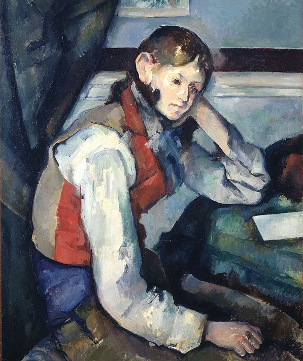

The Boy in the Red Vest
Edward Hopper
The Boy in the Red Vest
Edward Hopper
1889
Cézanne painted four oil portraits of this Italian boy in the red vest, all in different poses, which allowed him to study the relationship between the figure and space. The most famous of the four, and the one commonly referred to by this title, is the one which depicts the boy in a melancholic seated pose with his elbow on a table and his head cradled in his hand. It is currently held in Zürich, Switzerland. The other three portraits, of different poses, are in museums in the US.
GO TO SOURCE